전자기기기능사 (2014-10-11 기출문제)
1과목: 전기전자공학
1. PN 접합 다이오드의 기본 작용은?
- 증폭작용
- 발진작용
- 발광작용
- 정류작용
(정답률: 79%)

2. 이미터 접지 증폭회로에서 바이어스 안정지수 S는 얼마인가? (단, 고정 바이어스임)
- β
- 1+β
- 1-β
- 1-α
(정답률: 84%)
3. 그림은 연산회로의 일종이다. 출력을 바르게 표시한 것은?
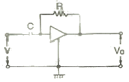
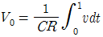
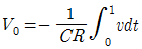
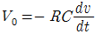
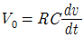
(정답률: 63%)
4. 다음과 같은 연산증폭기의 출력 e0는?
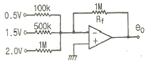
- -6[V]
- -10[V]
- -15[V]
- -20[V]
(정답률: 59%)
5. 4[Ω]의 저항과 8[mH]의 인덕턴스가 직렬로 접속된 회로에 60[Hz], 100[V]의 교류전압을 가하면 전류는 약 몇 [A]인가?
- 20[A]
- 25[A]
- 30[A]
- 35[A]
(정답률: 42%)
6. 정류회로의 직류전압이 300[V]이고, 리플 전압이 3[V]이었다. 이 회로의 리플율은 몇 [%]인가?
- 1[%]
- 2[%]
- 3[%]
- 5[%]
(정답률: 82%)
7. A급 저주파 증폭기의 최대 효율은 몇 [%]인가?
- 25[%]
- 50[%]
- 78.5[%]
- 100[%]
(정답률: 73%)
8. T 플립플롭의 설명으로 옳지 않은 것은?
- 클럭 펄스가 가해질 때마다 출력상태가 반전한다.
- 출력파형의 주파수는 입력주파수의 1/2이 되기 때문에 2분주회로 및 계수회로에 사용된다.
- JK플립플롭의 두 입력을 묶어서 하나의 입력으로 만든 것이다.
- 어떤 데이터의 일시적인 보존이나 디지털신호의 지연작용 등의 목적으로 사용되는 회로이다.
(정답률: 56%)
9. 변조도 "m>1"일 때 과변조(over modulation) 전파를 수신하면 어떤 현상이 생기는가?
- 검파기가 과부하된다.
- 음성파 전력이 커진다.
- 음성파 전력이 작아진다.
- 음성파가 많이 일그러진다.
(정답률: 74%)
10. 다음 중 억셉터(accepter)에 속하지 않는 것은?
- 붕소(B)
- 인듐(In)
- 게르마늄(Ge)
- 알루미늄(Al)
(정답률: 73%)
11. 이상적인 연산증폭기에 대한 설명으로 옳지 않은 것은?
- 대역폭은 일정하다.
- 출력저항은 0이다.
- 전압이득은 무한대이다.
- 입력저항은 무한대이다.
(정답률: 63%)
12. 트랜지스터가 정상 동작(전류 증폭)을 하는 영역은?
- 포화영역(saturation region)
- 항복영역(breakdown region)
- 활성영역(active region)
- 차단영역(cutoff region)
(정답률: 79%)
13. J-K Flip-Flop에서 입력이 J=1, K=1일 때 Close pulse가 계속 들어오면 출력의 상태는?
- Toggle
- Set
- Reset
- 동작불능
(정답률: 74%)
14. 직렬형 정전압 회로의 특징에 대한 설명으로 틀린 것은?
- 경부하시 효율이 병렬에 비하여 훨씬 크다.
- 과부하시 전류가 제한된다.
- 출력전압의 안정 범위가 비교적 넓게 설계된다.
- 증폭단을 증가시킴으로써 출력저항 및 전압 안정계수를 매우 작게 할 수 있다.
(정답률: 57%)
15. 다음과 같은 연산증폭기의 기능으로 가장 적합한 것은? (단, R¡=Rf이고 연산증폭기는 이상적이다.)
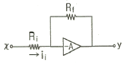
- 적분기
- 미분기
- 배수기
- 부호변환기
(정답률: 75%)
2과목: 전자계산기일반
16. 자체 인덕턴스 0.2[H]의 코일에 흐르는 전류를 0.5초 동안에 10[A]의 비율로 변화시키면 코일에 유도되는 기전력은?
- 2[V]
- 3[V]
- 4[V]
- 5[V]
(정답률: 49%)
17. 16진수 D27을 2진수로 변환하면?
- 110101110010
- 110100100111
- 011111010010
- 011100101101
(정답률: 79%)
18. 다음 ( )안에 들어갈 용어로 알맞은 것은?
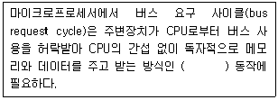
- interrupt
- polling
- DMA
- MAR
(정답률: 79%)
19. 마이크로프로세서의 내부 구성요소 중 산술연산과 논리연산 동작을 수행하는 것은?
- PC
- MAR
- IR
- ALU
(정답률: 83%)
20. 정적인 기억소자 SRAM은 무슨 회로로 구성되어 있는가?
- COUNTER
- MOSFET
- ENCODER
- FLIPFLOP
(정답률: 73%)
21. 컴퓨터시스템에서 자료를 처리하는 최소 단위는?
- 바이트(byte)
- 비트(bit)
- 워드(word)
- 니블(Nibble)
(정답률: 85%)
22. 다음 중 인간중심 언어인 고급언어가 아닌 것은?
- BASIC
- COBOL
- FORTRAN
- ASSEMBLY
(정답률: 72%)
23. 다음 중 "0"에서부터 "9"까지의 10진수를 4비트의 2진수로 표현하는 코드는?
- 아스키 코드
- 3-초과 코드
- 그레이 코드
- BCD 코드
(정답률: 75%)
24. 다음 그림은 순서도의 기호를 나타낸 것이다. 무엇을 나타내는 기호인가?
- 처리
- 판단
- 터미널
- 준비
(정답률: 80%)
25. 다음 회로의 출력 결과로 맞는 것은? (단, A, B는 입력, Y는 출력이다.)
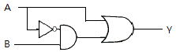
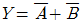
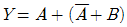
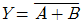
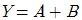
(정답률: 54%)
26. 다음 중 컴퓨터를 구성하는 기본 소자의 발전 과정을 순서대로 옳게 나열한 것은?
- Tube→TR→IC
- Tube→IC→TR
- TR→IC→Tube
- IC→TR→Tube
(정답률: 72%)
27. 프로그램에서 자주 반복하여 사용되는 부분을 별도로 작성한 후 그 루틴이 필요할 때마다 호출하여 사용하는 것으로, 개방된 서브루틴이라고도 하는 것은?
- 매크로
- 레지스터
- 어셈블러
- 인터럽트
(정답률: 77%)
28. 컴퓨터에서 보수(complement)를 사용하는 가장 큰 이유는?
- 가산과 승산을 간단히 하기 위해
- 감산을 가산의 방법으로 처리하기 위해
- 가산의 결과를 정확히 하기 위해
- 감산의 결과를 정확히 하기 위해
(정답률: 67%)
29. 그림에서 a=15mm, b=13mm라 하면 수직 수평 두 전압의 위상차는?
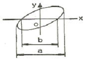
- 약 30˚
- 약 45˚
- 약 60˚
- 약 75˚
(정답률: 57%)
30. 시간에 따라서 직선적으로 증가하는 전압은?
- 비교 전압
- 계수 전압
- 직류 전압
- 램프 전압
(정답률: 65%)
3과목: 전자측정
31. 다음 중 가장 높은 주파수를 측정할 수 있는 계기는?
- 동축형 주파수계
- 흡수형 주파수계
- 헤테로다인 주파수계
- 전력계형 주파수계
(정답률: 70%)
32. 다음 중 흡수형 주파수계의 구성으로 필요하지 않는 것은?
- 발진기
- 검파기
- 직류 전류계
- 공진회로
(정답률: 46%)
33. 정전용량이나 유전체 손실각의 측정에서 사용되는 브리지는?
- 맥스웰 브리지
- 셰링 브리지
- 헤이 브리지
- 하트숀 브리지
(정답률: 76%)
34. 중저항 측정방법이 아닌 것은?
- 편위법
- 직편법
- 미끄럼줄 브리지
- 휘트스톤 브리지법
(정답률: 39%)
35. 다음 중 펄스형 주파수와 전압을 측정하는데 가장 적합한 것은?
- VTVM
- 헤테로다인 주파수계
- 회로시험기
- 오실로스코프
(정답률: 73%)
36. 자동 평형 기록기는 어느 측정법에 속하는가?
- 영위법
- 편위법
- 직접측정법
- 간접측정법
(정답률: 70%)
37. 내부저항 4[㏀], 최대눈금 50[V]의 전압계로 300[V]의 전압을 측정하기 위한 배율기 저항은 몇 [Ω]인가?
- 670[Ω]
- 800[Ω]
- 20000[Ω]
- 24000[Ω]
(정답률: 55%)
38. 표준 신호발생기의 필요조건으로 옳지 않은 것은?
- 주파수가 정확하고 가변범위가 넓을 것
- 변조도가 자유롭게 조절될 수 있을 것
- 출력 임피던스가 크고 가변적일 것
- 불필요한 출력을 내지 않을 것
(정답률: 79%)
39. 다음 중 캠벨 브리지(Cambell bridge)는 주로 무엇을 측정하는가?
- 고저항
- 컨덕턴스
- 정전 용량
- 상호 인덕턴스
(정답률: 56%)
40. 그림과 같이 전압계 및 전류계를 연결하였다. 부하 전력은 얼마인가? (단, 전압계, 전류계의 지시는 각각 100[V], 4{A]이고 전류계의 내부 저항은 0.5[Ω]이다.)
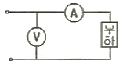
- 400[W]
- 398[W]
- 392[W]
- 384[W]
(정답률: 52%)
41. 초음파 진동자에서 자기 왜형 진동자에 적합한 진동자는?
- 니켈
- 연강
- 수정
- 압전결정체
(정답률: 62%)
42. 공정제어에서 제어량의 종류에 속하지 않는 것은?
- 온도
- 장력
- 유량
- 압력
(정답률: 63%)
43. 다음 중 마이크로폰의 종류가 아닌 것은?
- 가동코일형 마이크로폰
- 트랜지스터 마이크로폰
- 일렉트리트형 마이크로폰
- 콘덴서 마이크로폰
(정답률: 46%)
44. 제어요소의 동작 중 연속동작이 아닌 것은?
- D동작
- P+D동작
- P+I동작
- ON-OFF동작
(정답률: 81%)
45. 태양전지에 축전장치가 필요한 이유로 옳은 것은?
- 빛의 반사를 위해서
- 빛의 굴절을 위해서
- 연속적인 사용을 위해서
- 광전자를 방출하기 위해서
(정답률: 86%)
4과목: 전자기기 및 음향영상기기
46. 유전가열의 공업상의 응용에 있어서 옳지 않은 것은?
- 고무의 가황
- 섬유류의 염색
- 목재의 건조
- 섬유류의 건조
(정답률: 70%)
47. 다음 중 전장 발광 장치의 설명으로 옳지 않은 것은?
- 형광체의 미소한 결정을 유전체와 혼합하여 여기에 높은 직류전압을 가하면 지속적으로 발광한다.
- 전극으로부터 전자나 정공이 직접 결정에 유입되지 않는다.
- 반도체의 성질을 가지고 있는 물질(형광체를 포함)에 전장을 가하면 발광현상이 생긴다.
- 발광은 결정 내부의 인가전압에 따라 높은 전장이 유기되어서 생기므로 고유형 EL이라 한다.
(정답률: 45%)
48. 공기 중에 떠 있는 먼지나 가루를 제거하는 장치는 초음파의 어느 작용을 응용한 것인가?
- 응집작용
- 캐비테이션
- 확산작용
- 에멀션화작용
(정답률: 66%)
49. 컬러 TV(수상기) 회로에서 색 동기회로의 링잉(Ringing)에 관한 설명으로 옳은 것은?
- 주파수 선택도가 높은 수정 필터에 간헐파의 버스트 신호를 직접 가하여 연속파의 3.58[㎒]를 재생하는 회로방식이다.
- 제1대역 증폭회로에 의해 증폭된 반송 색신호에 포함된 컬러 버스트 신호를 분리하여 증폭하는 회로이다.
- 3.58[㎒]의 자려 발진회로에 수정 필터를 통한 정확한 3.58[㎒]의 신호를 가하여 자려 발진기의 발진 주파수를 강제적으로 컬러 버스트에 동기를 취하게 하는 방식이다.
- 컬러 버스트와 수상기 측의 3.58[㎒]의 발진기의 위상차를 검출하여 3.58[㎒] 발진기의 위상을 제어하여 부반송파를 얻을 수 있도록 한 회로이다.
(정답률: 37%)
50. FM 통신 방식의 특징으로 옳은 것은?
- SN비가 나쁘다.
- 혼신 방해를 적게 할 수 있다.
- 수신기의 출력 준위 변동이 많다.
- 송신시의 효율을 높일 수 있고, 일그러짐이 많다.
(정답률: 58%)
51. 색의 3요소에 해당하지 않는 것은?
- 색상
- 채도
- 투명도
- 명도
(정답률: 79%)
52. 790[㎑]의 중파방송을 수신하려 할 때 슈퍼헤테로다인 수신기의 국부발진 주파수는 얼마로 조정해야 하는가? (단, 중간주파수는 450[㎑]이다.)
- 340[㎑]
- 450[㎑]
- 790[㎑]
- 1240[㎑]
(정답률: 71%)
53. 다음 중 캐비테이션(공동작용)을 이용한 것은?
- 소나
- 초음파 세척
- 초음파 납땜
- 고주파 가열
(정답률: 57%)
54. 전축 바늘이 레코드판 음구의 벽을 밀기 때문에 생기는 잡음을 제거하기 위하여 사용하는 필터(filter)는?
- 수정 필터
- 스크래치 필터
- RC 필터
- CL 필터
(정답률: 67%)
55. 다음 중 소나(sonar)와 관계없는 것은?
- 수중 레이더
- 어군 탐지기
- 물의 깊이와 수위
- 물속에 녹아 있는 염분의 농도측정
(정답률: 83%)
56. 다음 각 항법장치의 설명 중 옳은 것은?
- TACAN : 전파의 도래 방향을 자동적으로 측정한다.
- ADF : 두국 A, B의 전파의 도래 시간차를 측정한다.
- VOR : 사용주파수는 108[㎒]~118[㎒]의 초단파를 사용한다.
- 로란(Loran) : 지상국으로부터 방위와 거리를 측정하는 시스템이다.
(정답률: 63%)
57. 등화 증폭기의 역할로서 거리가 먼 것은?
- 고역에 대한 이득을 낮추어 원음 재생이 실현되도록 한다.
- 고음역의 잡음을 감쇠시킨다.
- 라디오의 음질을 좋게 한다.
- 미약한 신호를 증폭한다.
(정답률: 54%)
58. 다음 제어계 블록선도에서 전달함수 C/R는?
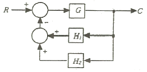
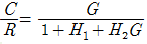
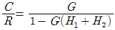
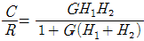
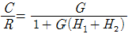
(정답률: 57%)
59. 수신안테나의 특성으로 사용하지 않는 것은?
- 종횡비
- 대역폭
- 지향성
- 이득
(정답률: 53%)
60. 수신기의 성능에서 종합특성이 아닌 것은?
- 감도
- 충실도
- 선택도
- 증폭도
(정답률: 52%)